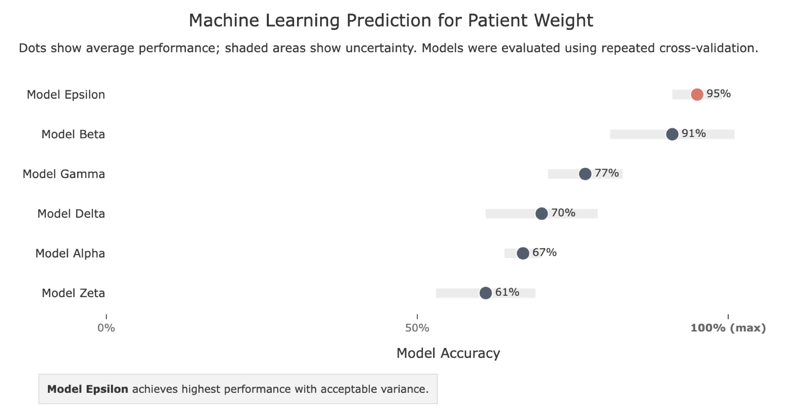
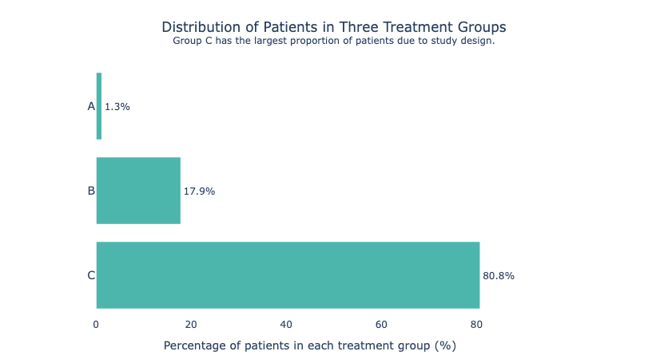
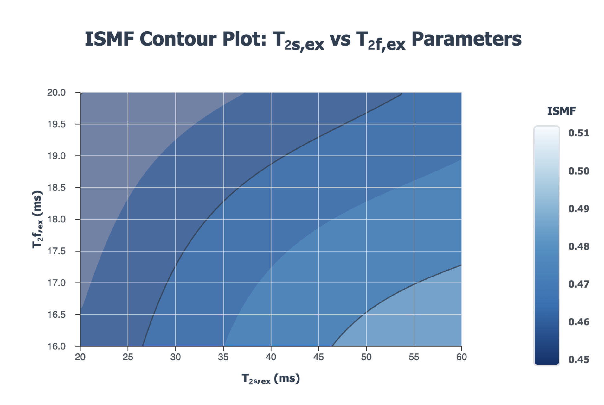
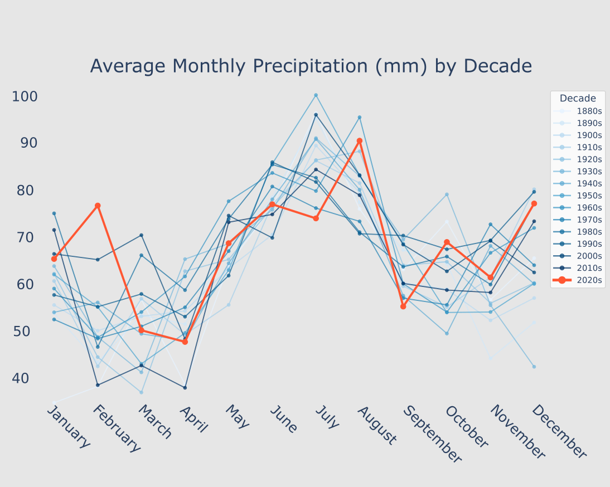
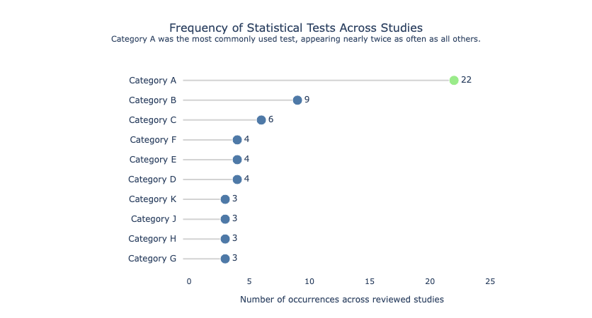
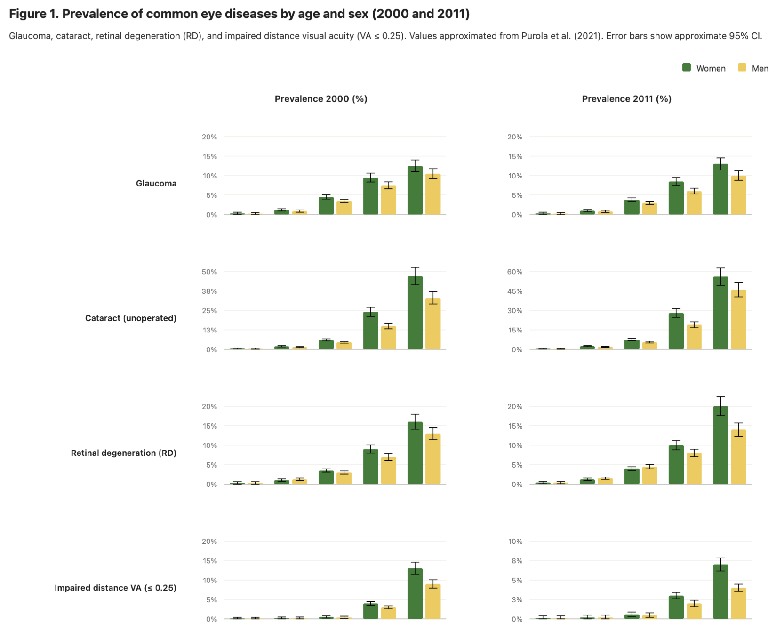
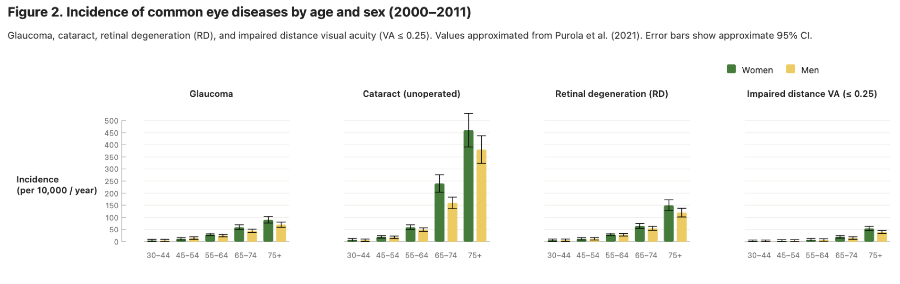
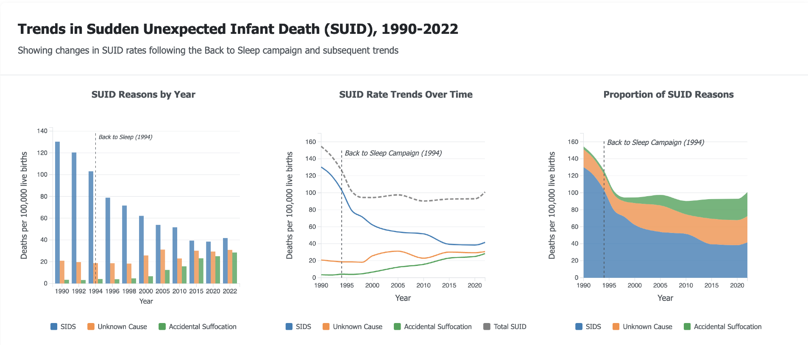

Machine Learning Model Comparison: Accuracy with Uncertainty
A dot plot with uncertainty bands is ideal when comparing model performance: it shows both the average result and the variance. Highlighting the best model in a contrasting colour immediately directs the reader's eye to the conclusion, so they don't have to rank the rows themselves. The take-away annotation at the bottom reinforces the message in plain language, which is especially valuable in clinical or cross-disciplinary research where not all readers will interpret a chart independently.

Distribution of Patients in Three Treatment Groups
When group sizes are highly unequal, a horizontal bar chart makes the imbalance impossible to miss.

ISMF Contour Plot: T₂s,ex vs T₂f,ex Parameters
Contour plots let you show how a third variable responds to two inputs simultaneously. A sequential single-hue palette (light → dark blue) works well here because the variable has no meaningful zero — readers intuitively read darker as higher without needing to learn a colour code.

Average Monthly Precipitation by Decade
With many overlapping lines, highlighting a single focal series in a strong colour (here, the 2020s in red-orange) while fading the rest to grey-blue draws the eye exactly where you want it. The reader sees the context and the story in one glance.

Frequency of Statistical Tests Across Studies
A lollipop chart is a leaner alternative to a bar chart — the thin stem reduces ink without losing any information. It works especially well when one value dominates (Category A at 22, nearly double the rest), because the long stem makes the outlier visually dramatic.

Prevalence of Eye Diseases by Age & Sex (2000 and 2011)
Arranging eight panels on a shared grid lets the reader compare diseases, sexes, and time points without re-learning the axes. Consistent y-axis scales across rows are critical here — rescaling each panel independently would make small conditions look as prominent as common ones.

Incidence of Eye Diseases by Age & Sex (2000–2011)
When the story is about relative differences between groups rather than absolute scale, small multiples arranged horizontally work better than a single crowded panel.

Trends in Sudden Unexpected Infant Death, 1990–2022
Showing the same data in three chart types side by side — bar, line, and stacked area — lets the reader choose the frame that answers their question. Annotating a key event (the 1994 Back to Sleep campaign) directly on each panel ties the visual to the narrative without forcing the reader to cross-reference the caption.
1 / 6
Subscribe to the Peer Re-viewed newsletter and get easy-to-implement fixes for your scientific publications straight to your inbox.